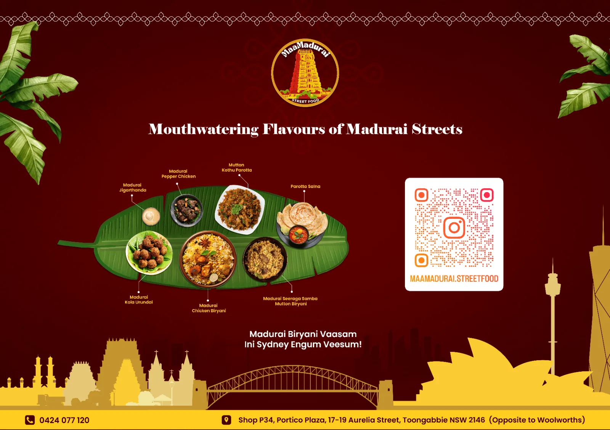

A Great Madurai Unavu Veedu in Western Sydney
MaaMadurai brings the great flavours of Madurai to Portico Plaza in Toongabbie, opposite Woolworths. In Tamil, Maa also means Great — and MaaMadurai celebrates Great Madurai: the bold taste, big-hearted people and ever-awake food streets of the temple city.
Everything is cooked fresh to order with curry leaves, ghee and freshly ground masala — from fluffy idly and crispy dosai in the morning to Seeraga Samba mutton biryani, Chettinad-leaning gravies and kothu parotta at night. Every plate is our way of saying "Vaanga, Sapdalam" — come, eat with us.
We are a five-minute drive from Pendle Hill, Girraween and Wentworthville, and a short trip from Parramatta, Seven Hills and Blacktown — with free parking at Portico Plaza.

Signature Madurai Dishes
The plates people travel across Western Sydney for. Every one of them is on the menu daily.
Short-grain Seeraga Samba rice, slow-simmered with mutton on the bone. $20.99
Parotta shredded and smashed on the tawa with egg, gravy and masala. $16.99
Dry-fried mutton with pepper, shallots and curry leaves. $15.99
The Tamil Nadu classic — crisp, red, curry-leaf tossed. $13.99

Spiced minced meatballs, a Madurai street staple. $11.99

Almond gum, nannari, milk and ice cream — Madurai in a glass. $12.99
Why Western Sydney Eats Here
Madurai, not generic
Kari dosai, kola urundai, Nenju Ezhumbu soup and Jigarthanda — dishes you would struggle to find anywhere else in Sydney, cooked the way Madurai cooks them.
Cooked to order
Parotta is layered and smashed on the tawa when you order it. Biryani is simmered slowly in Seeraga Samba rice. Nothing sits under a heat lamp.
Virundhombal
Cherishing guests is the Tamil value we run the restaurant on. From the first "Vanakkam" to the last filter coffee, you should feel like you are at your amma veedu.

Visit Us in Toongabbie
Address
Shop P34, Portico Plaza17–19 Aurelia Street
Toongabbie NSW 2146
Opposite Woolworths, free centre parking Get directions →
Opening Hours
- Monday
- Closed
- Tuesday
- 5pm – 9pm
- Wednesday
- 5pm – 9pm
- Thursday
- 11am – 9pm
- Friday
- 11am – 9pm
- Saturday
- 10am – 9pm
- Sunday
- 9am – 8pm
MaaMadurai at a Glance
- What it is
- MaaMadurai is a sit-down Madurai-style Tamil and South Indian restaurant with 40+ seats. We do not take bookings — seating is walk-in.
- Where it is
- Shop P34, Portico Plaza, 17–19 Aurelia Street, Toongabbie NSW 2146 — inside the plaza opposite Woolworths, a short walk from Toongabbie station, with free plaza parking. Directions and transport.
- Signature dishes
- Seeraga Samba mutton biryani, chicken and mutton kothu parotta, kari dosai, Madurai mutton chukka, Chicken 65 and Jigarthanda. See all 60+ dishes and prices.
- Hours
- Tue–Wed 5pm–9pm, Thu–Fri 11am–9pm, Sat 10am–9pm, Sun 9am–8pm. Closed Monday. Idly, vadai, dosai and uttappam are served all day.
- How to order
- Walk in, call 0424 077 120 for pick-up at in-store prices, or order delivery on Uber Eats or DoorDash — app prices are slightly higher. All ordering options.
- Catering
- Half and full biryani buckets from $105, with one to two days of notice, for birthdays, corporate lunches, temple functions and weddings across Western Sydney. Catering and quote request.
- Dietary
- The chicken and mutton we use is halal. Vegetarian options run right through the menu. One kitchen cooks everything, so we cannot guarantee any dish is allergen-free.
- Read more
- Our kitchen explains the dishes in the Madurai Food Journal — kothu parotta, Seeraga Samba biryani and Jigarthanda, plus what to order on a first visit.
Frequently Asked Questions
Where is MaaMadurai located?
Shop P34, Portico Plaza, 17–19 Aurelia Street, Toongabbie NSW 2146 — opposite Woolworths. Our main entrance is on Aurelia Street. You can park free inside the Portico Plaza car park or on the street outside, and the shop is a short walk from Toongabbie station.
Can I dine in, and do you take bookings?
Yes, we are a sit-down restaurant with 40+ seats. We do not take bookings — seating is walk-in for everyone. For a large group, call 0424 077 120 and we will tell you the quietest time to come.
What are your opening hours?
Tuesday and Wednesday 5pm – 9pm, Thursday and Friday 11am – 9pm, Saturday 10am – 9pm, Sunday 9am – 8pm. We are closed on Mondays.
Do you serve breakfast?
Yes. Idly, vadai, dosai and uttappam are on the menu all day, from opening to close.
Is your meat halal?
Yes. The chicken and mutton we cook with is halal.
Do you deliver around Western Sydney?
Yes. Order on Uber Eats or DoorDash for delivery to Toongabbie, Pendle Hill, Wentworthville, Girraween, Seven Hills, Winston Hills and nearby suburbs. Delivery-app prices are slightly higher than our in-store prices.
Do you cater for parties and functions?
Yes. We do half and full biryani buckets — from $105 for a half bucket of Madurai chicken biryani — for birthdays, corporate lunches, temple functions and weddings across Western Sydney. One to two days of notice is usually enough. Call 0424 077 120 with your headcount and we will size the order.
Do you have vegetarian options?
Plenty. Idly, all our dosai and uttappam, veg kothu parotta, vegetable biryani, veg gravy, and sides like Methu Vadai are vegetarian.
What is Jigarthanda?
A Madurai speciality cold drink made with milk, nannari syrup, almond gum and ice cream. It is the drink the city is famous for, and we make it the traditional way.